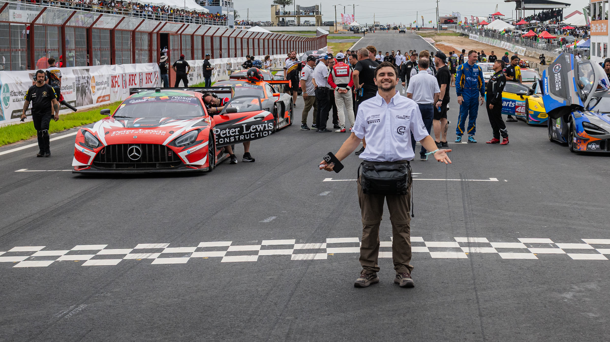
Postulación · Comunicador · Tiempo parcial
Cobertura de eventos, notas de prensa y estrategia de comunicación.
Profesional independiente, no una agencia de publicidad. Trabajo de forma integral con pocos clientes —a diario, cada semana o cada mes— metido en cada parte del proceso: la estrategia, el texto, la grabación, la publicación y el informe.
Y mi especialidad son los eventos que no se repiten: lo que no se produce, edita y publica el mismo día, pierde la mitad de su valor.
Quién soy
No soy una agencia publicitaria grande con decenas de cuentas y un ejecutivo distinto cada mes. Dirijo Pro Motion Sport Marketing, una operación propia y deliberadamente pequeña: elijo pocos clientes y me involucro de forma integral en la comunicación de cada uno.
Eso significa acompañamiento sostenido —diario, semanal o mensual, según lo que el proyecto necesite— y presencia en todas las etapas: el diagnóstico, la estrategia, el calendario, los textos, la grabación, la edición, la publicación y la medición. No entrego piezas sueltas: me hago parte de la estrategia de comunicación del proyecto.
Desde febrero de 2023 mantengo una relación continua con esta agencia quiteña: coberturas de evento en tiempo real, eventos corporativos, piezas institucionales y contenido editorial. Es la razón por la que viajo a Quito todos los meses.
Desde 2026 llevo la comunicación del GT Challenge de las Américas, que en una misma temporada pasó por Panamá, Guyana, Barbados y México, con equipos de varias nacionalidades, autoridades locales y prensa acreditada.
Soy licenciado en Marketing por la Universidad del Azuay y empecé como community manager del Club Deportivo Cuenca, produciendo en el campo y en tiempo real. He acompañado a marcas como Thor Kitchen, iGlace, HiHeat, Recovery y Star Wild, cubriendo eventos de distinta índole. Lo que ofrezco no es solo producción audiovisual: es la estrategia de comunicación y la medición que la sostiene.
Punto por punto
Trayectoria
No es una lista de empleos: es una secuencia de proyectos en los que he sido el responsable de que la comunicación saliera, a tiempo y con criterio.
Hoy · tres proyectos en curso
Pro Motion Sport Marketing · Cuenca, Ecuador
Dirijo la estrategia, la línea editorial y la producción de todos los proyectos de la casa. Diseño los planes de comunicación, escribo los guiones y textos clave, coordino al equipo de producción y respondo por la calidad final de cada entrega. También construyo los informes y micrositios con los que los clientes y sus aliados leen los resultados.
GT Challenge de las Américas · Panamá · Guyana · Barbados · México
Comunicación de un campeonato multinacional, fecha por fecha: planificación previa, cobertura en sede, notas y boletines, piezas gráficas de resultados, coordinación con organizadores locales, equipos, prensa acreditada y marcas, y el informe de cada fecha en español e inglés. Cuatro países en una sola temporada, dos de ellos de habla inglesa.
OX Sport Agency · Quito, Ecuador · Remoto con presencia mensual
Casi cuatro años de relación continua con una agencia quiteña: coberturas de evento en tiempo real, eventos corporativos, piezas institucionales a cámara y contenido editorial con subtitulado. Es el vínculo por el que viajo a Quito cada mes y por el que sostengo equipo disponible en la capital y en Guayaquil.
Antes · marcas, deportistas y primeros pasos
Thor Kitchen · iGlace · HiHeat (ViCOMER) · Recovery · Star Wild · TradeGrow
Línea editorial, calendario, producción mensual y cobertura de eventos de distinta índole —lanzamientos, activaciones en punto de venta, ferias y jornadas corporativas— para marcas de consumo, salud y servicios. Con ViCOMER además monté un sistema de informes comparable entre sus marcas: qué funcionó, qué no, por qué, y qué se hace el mes siguiente.
Sebastián Merchán · Diego Serrano · Factory Bike · Juan Guerrero
Identidad, relato, cobertura de competencia y material comercial en disciplinas al aire libre: automovilismo, downhill, rally y motocross. Aquí es donde se entrena la cobertura de lo que ocurre una sola vez y no se puede repetir.
Club Deportivo Cuenca · Jornada completa · Presencial
Estrategia de contenido para Facebook, Instagram, X y TikTok, material audiovisual diario y en tiempo real durante entrenamientos y partidos, edición para reels, distribución de comunicados y seguimiento de las noticias de interés para el club. Mi primera escuela: publicar tarde es casi igual que no publicar.
Selina · Jornada parcial · Remoto
Material visual para las cuatro locaciones de la marca en Ecuador —Quito, Cuenca, Montañita y Baños—, gestión de campañas pagadas y orgánicas, comunidad de usuarios y creación y seguimiento de eventos mensuales. Mi primer trabajo remoto, a tiempo parcial y multiciudad: exactamente el formato de esta vacante.
Connection English Perfection · Cuenca, Ecuador
Apertura de mercado y acercamiento a organizaciones del sector público y privado para ofertar capacitación técnica en inglés. Aprendí a entrar en instituciones, a sostener una conversación larga con quien decide y a ordenar la información comercial para que no dependa de la memoria de nadie.
FIFTEAM S.A. · Cuenca, Ecuador
Introducción de una aplicación móvil quiteña en el mercado de Cuenca: afiliación de establecimientos y primer contacto con el trabajo de campo.
Mi especialidad
Competencias al aire libre que ocurren una sola vez. No hay segunda toma, no hay reprogramación y la ventana de atención dura horas. Todo tiene que producirse, editarse y distribuirse en el menor tiempo posible — y aun así contar algo.
Formato de autor
Desarrollé un formato propio de periodista contemporáneo: hablo directamente a la cámara desde el lugar, mostrando la situación relevante en vez de describirla. Sirve igual para explicar un hito, para presentar una sede o para dar contexto a una audiencia que no estuvo ahí.
Respaldo en Quito
Viajo a Quito todos los meses, y entre viajes hay equipo. Estas tres piezas son de mi trabajo continuo con OX Sport Agency: comunicación institucional a cámara, cobertura fuera de la capital y contenido editorial, todas con subtitulado para consumo sin audio.
Redacción y gráfica
Mi trabajo no termina en el video. Escribo las notas de prensa, los boletines y los textos de vocería, y los traduzco a formatos gráficos de alto impacto: cada resultado, récord o anuncio sale como una pieza que se entiende en dos segundos en un feed y como un texto que un periodista puede usar tal cual.
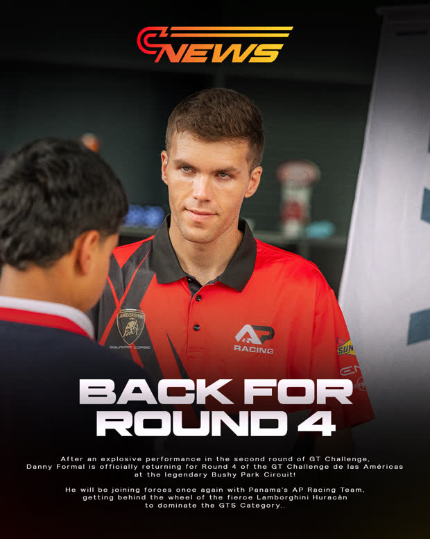
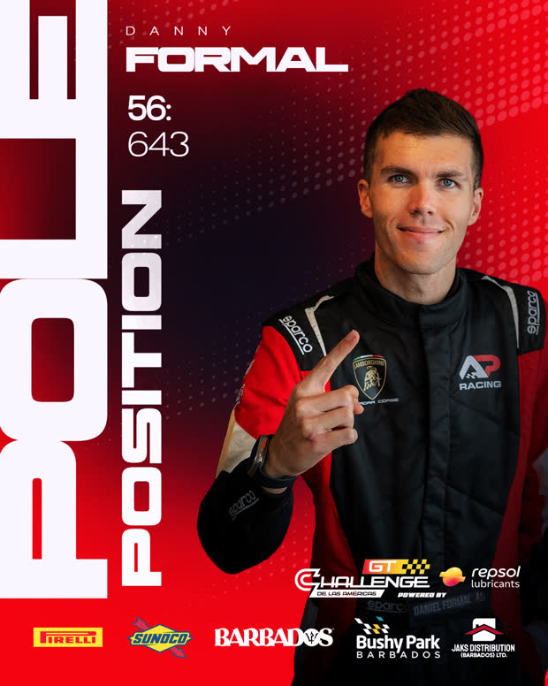
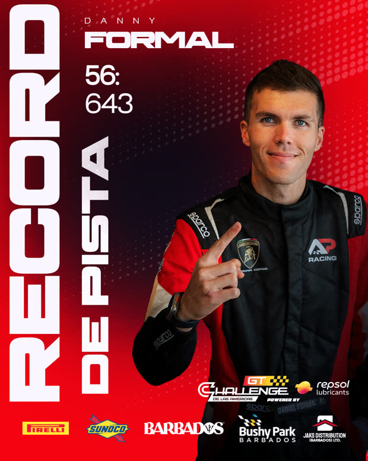
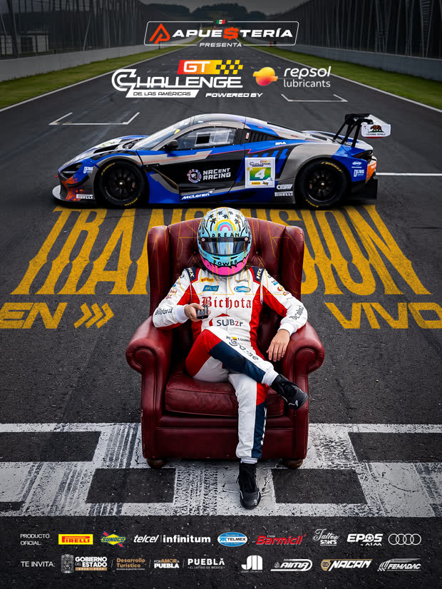
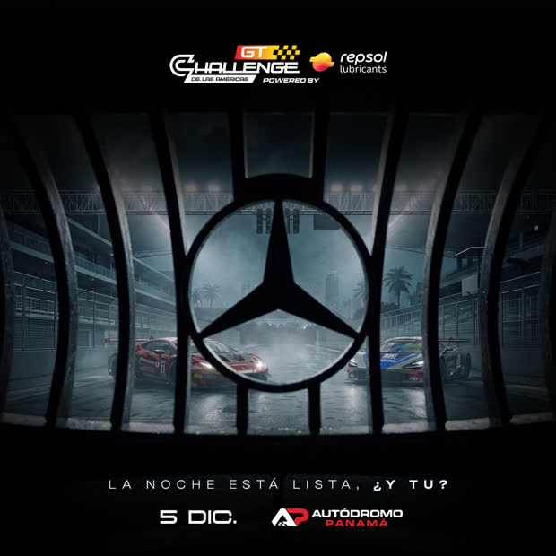
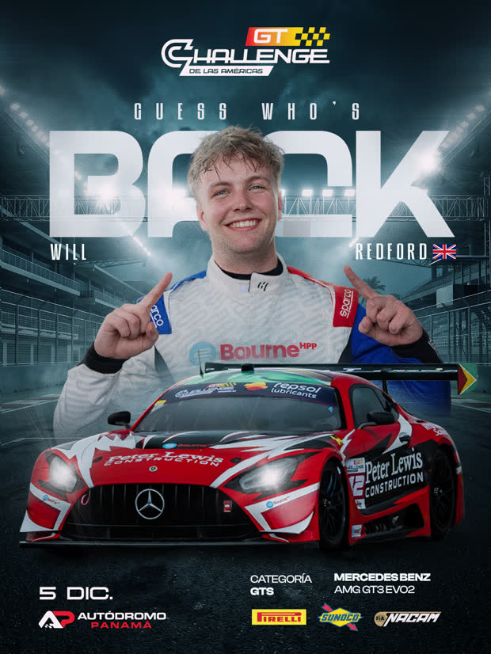
Estrategia y visibilidad
La producción audiovisual es el oficio visible. Lo que sostiene el trabajo es la estrategia de comunicación y marketing digital: decidir qué se cuenta, a quién, en qué orden y cómo se mide. Y después poder demostrarlo.
Pilares, series, calendario y ganchos. No publicar por publicar: cada pieza responde a un objetivo y a un público definido, y se evalúa contra eso.
Qué pasó, por qué, qué aprendimos y qué sigue — con periodo, fuente y fórmula declarados. Evidencia de lo entregado, no solo capturas de pantalla.
Construyo informes, micrositios y herramientas internas directamente en web, apoyándome en inteligencia artificial integrada a mis procesos. Esta misma página es un ejemplo.
No son capturas de pantalla pegadas en un PDF. Son documentos web navegables, con su propia estructura, su lectura de datos y sus recomendaciones, construidos y publicados por mí. Estos cinco se pueden abrir ahora mismo.
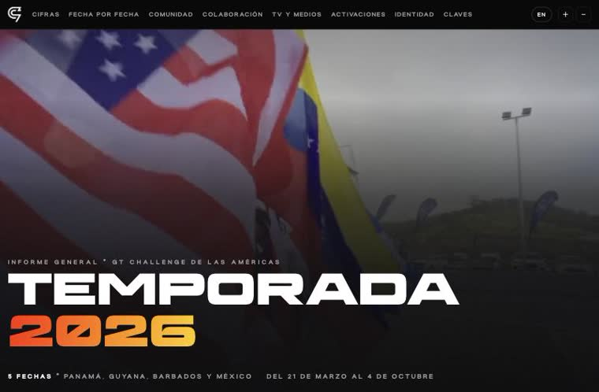
GT Challenge · Informe general de temporada Las cinco fechas de 2026 —Panamá, Guyana, Barbados y México— en un solo documento: cobertura, activaciones, medios y lectura de resultados. Abrir informe ↗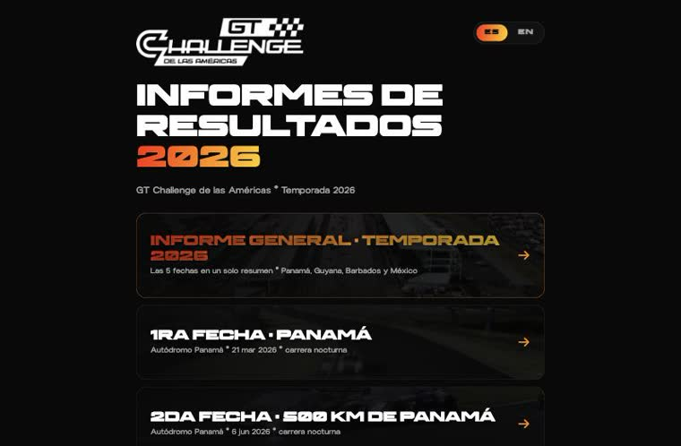
GT Challenge · Informes por fecha (ES / EN) Un informe por cada fecha, con versión en español y en inglés. Misma estructura, mismo criterio, adaptado al público de cada país sede. Abrir portada ↗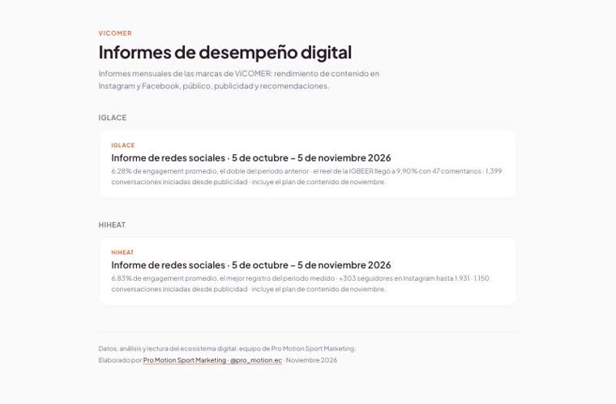
ViCOMER · Portada mensual por marca Un mismo sistema de informe servido a varias marcas del grupo, subdividido por cada una, con el resumen de cada periodo a la vista desde la portada. Abrir portada ↗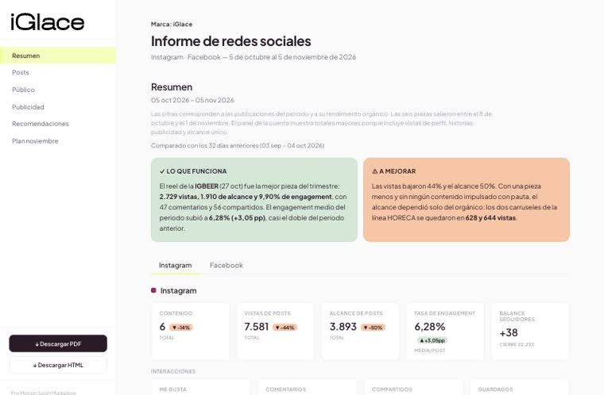
iGlace · Informe mensual Navegación lateral, resumen honesto en dos columnas —lo que funciona y lo que hay que mejorar—, métricas por red, análisis de público y plan del mes siguiente. Abrir informe ↗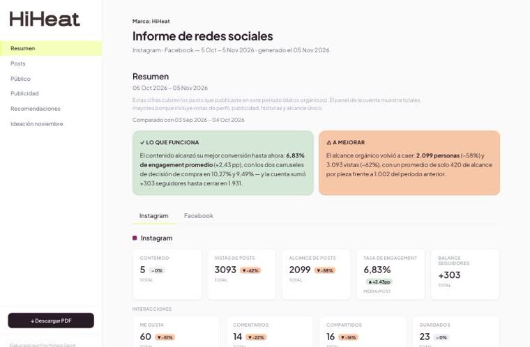
HiHeat · Informe mensual La misma estructura aplicada a otra marca del mismo grupo: comparable mes a mes y entre marcas, descargable en PDF para quien prefiera leerlo así. Abrir informe ↗Competencias, idiomas y formación
En terreno
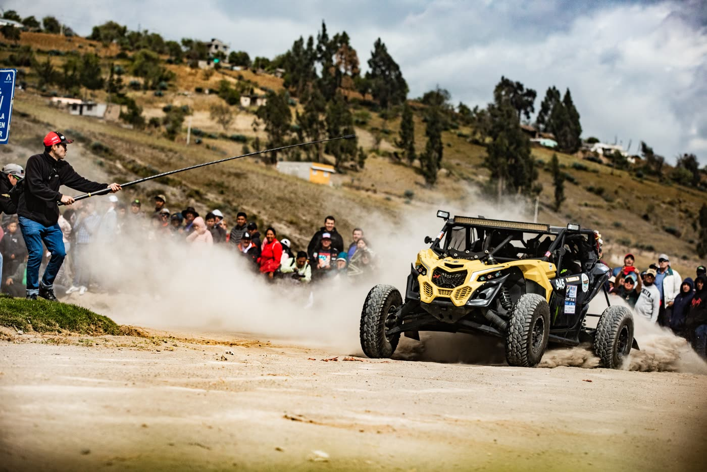
Cobertura de rally: captura a centímetros del auto, en tramo abierto y con una sola oportunidad.
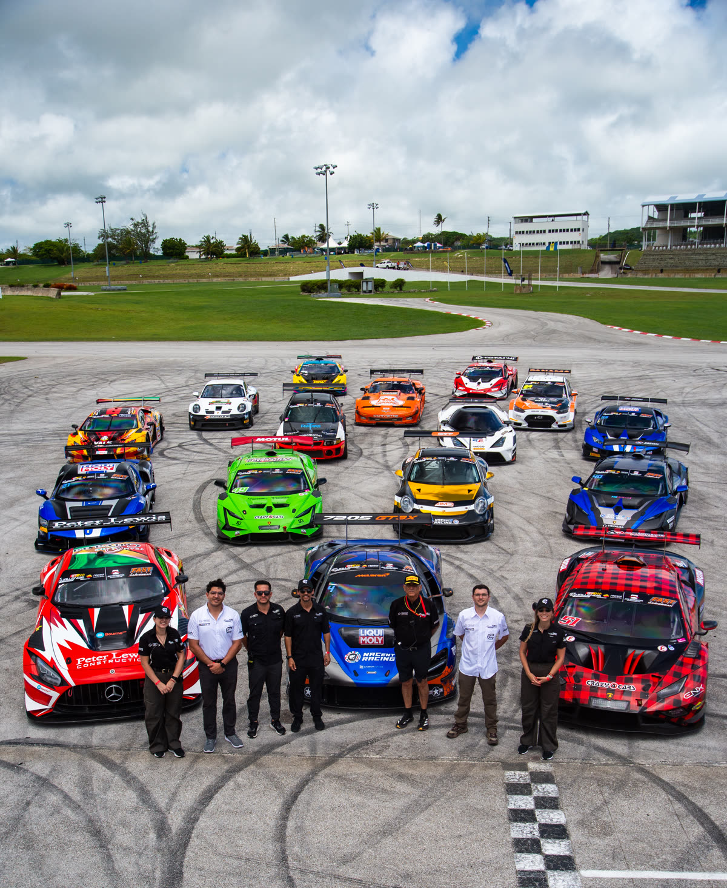
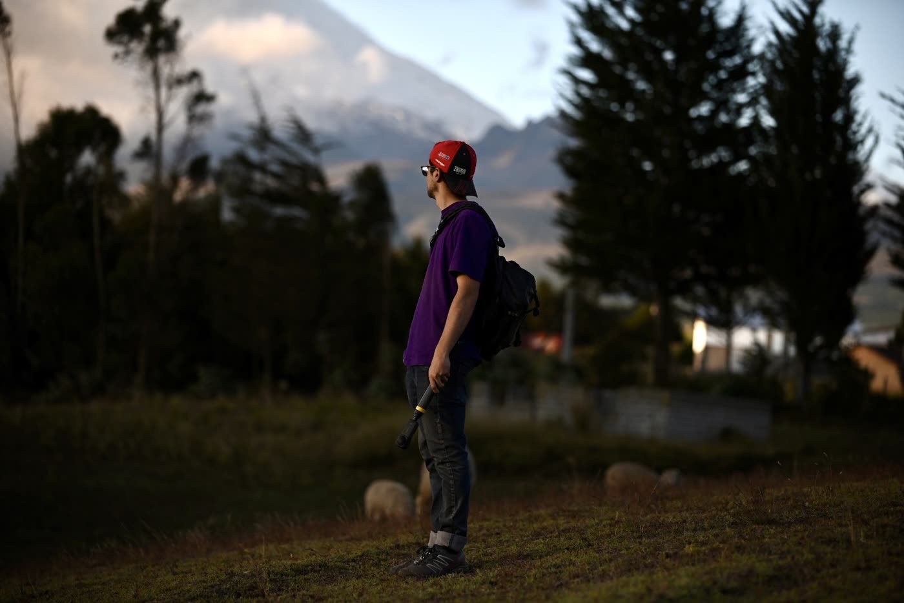
Disponibilidad
Disponible para incorporarme a tiempo parcial, con agenda semanal fija, teletrabajo como base y presencia en Quito para las coberturas que lo requieran. Mi equipo cubre lo que mi agenda de viaje no alcance.